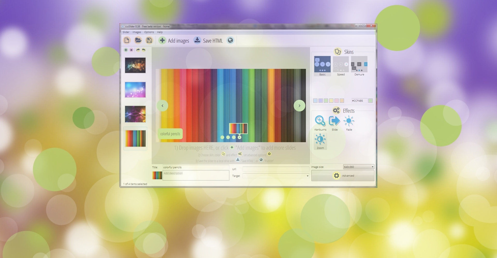

No more jQuery
No more JavaScript
No more image icons
CSS-only slider
Hardware-accelerated CSS animations
Icon font for controls
All browsers
Fully responsive
Mobile friendly
Retina-ready
Awesome effects and skins
Full width option
No more coding
Super easy drag-n-drop slider maker
Free download for Windows and Mac